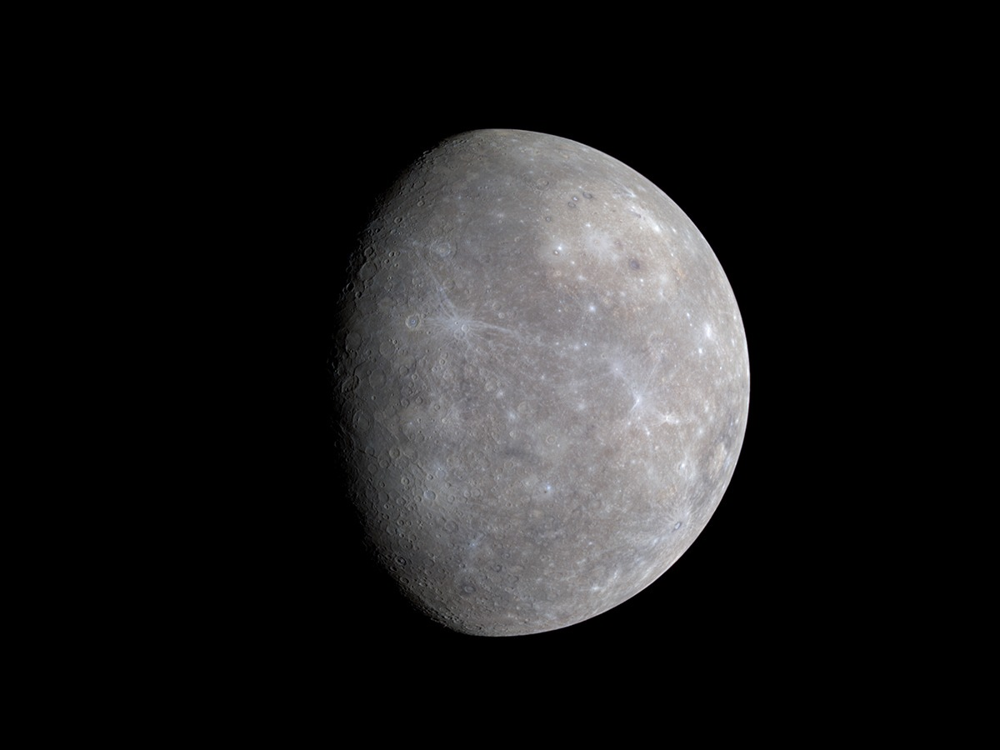

Créditos - "https://www.nasa.gov/news-release/new-sun-missions-to-help-nasa-better-understand-earth-sun-environment/"O Sol é uma estrela gigante composta principalmente de hidrogênio e hélio, que gera energia por meio de fusão nuclear. Essa energia é o que mantém nosso planeta aquecido e iluminado. A superfície do Sol, chamada fotosfera, tem uma temperatura média de cerca de 5.500°C, enquanto suas camadas externas podem alcançar milhões de graus. Além de nos fornecer luz, o Sol influencia o clima e gera fenômenos como manchas solares e erupções, que podem afetar a Terra.

Créditos - "https://science.nasa.gov/resource/mercurys-subtle-colors/"Mercúrio é o planeta mais próximo do Sol e o menor do sistema solar. Ele tem uma superfície rochosa repleta de crateras, semelhante à da Lua, e quase não tem atmosfera, o que faz suas temperaturas variarem drasticamente entre o dia e a noite, de cerca de 430°C durante o dia a -180°C à noite. Mercúrio completa uma órbita ao redor do Sol em apenas 88 dias terrestres, mas tem uma rotação lenta, com um dia em Mercúrio durando cerca de 59 dias terrestres.
Créditos - "https://www.nasa.gov/solar-system/nasas-davinci-explores-ten-mysteries-of-venus/"Vênus é o segundo planeta a partir do Sol e é similar à Terra em tamanho e composição, mas tem um ambiente extremamente hostil. Sua atmosfera é composta principalmente de dióxido de carbono, com nuvens densas de ácido sulfúrico, criando um efeito estufa descontrolado que eleva a temperatura da superfície a cerca de 465°C, tornando-o o planeta mais quente do sistema solar. Vênus tem uma rotação retrógrada, girando em sentido oposto ao da Terra, e leva 243 dias terrestres para completar uma rotação, o que significa que um dia em Vênus é mais longo que seu ano.
Créditos - "https://www.nasa.gov/missions/terra/earth-from-space-15-amazing-things-in-15-years/"A Terra é o terceiro planeta a partir do Sol e o único conhecido por abrigar vida. Com uma atmosfera rica em oxigênio, a Terra possui um clima equilibrado que permite a existência de água em seus três estados: sólido, líquido e gasoso. Cerca de 71% da superfície terrestre é coberta por oceanos, enquanto o restante é composto por continentes e ilhas. A Terra possui um campo magnético que protege o planeta dos ventos solares, e sua rotação completa em aproximadamente 24 horas, definindo os dias e as noites. A Terra também tem uma lua natural, que influencia as marés e estabiliza sua rotação.
Créditos - "https://www.nasa.gov/podcasts/houston-we-have-a-podcast/welcome-to-mars/"Marte é o quarto planeta a partir do Sol, conhecido como o 'Planeta Vermelho' devido à sua cor característica causada pelo óxido de ferro em sua superfície. Marte possui uma atmosfera fina, composta principalmente de dióxido de carbono, e temperaturas que variam de -125°C a 20°C. Com calotas polares de gelo, vales, montanhas, e o maior vulcão do sistema solar, o Monte Olimpo, Marte é um dos principais alvos de exploração espacial devido à sua potencial habitabilidade e indícios de água no passado. Um dia em Marte dura cerca de 24,6 horas, similar ao da Terra, e um ano marciano equivale a 687 dias terrestres.
Créditos - "https://science.nasa.gov/resource/high-resolution-globe-of-jupiter/"Júpiter é o maior planeta do sistema solar, com um diâmetro de cerca de 143.000 quilômetros. Ele é um gigante gasoso, composto principalmente de hidrogênio e hélio, e possui uma atmosfera turbulenta com bandas de nuvens e tempestades, incluindo a Grande Mancha Vermelha, uma enorme tempestade anticiclônica. Júpiter tem um forte campo magnético e é cercado por um sistema complexo de anéis e 92 luas conhecidas, incluindo as quatro maiores, chamadas de luas galileanas: Ío, Europa, Ganimedes e Calisto. Um dia em Júpiter dura cerca de 10 horas, enquanto um ano jupiteriano equivale a aproximadamente 12 anos terrestres.
Créditos - "https://science.nasa.gov/missions/hubble/hubble-sees-summertime-on-saturn/"Saturno é o segundo maior planeta do sistema solar, conhecido por seus impressionantes anéis, que são compostos de gelo e rochas. Ele é um gigante gasoso, com uma atmosfera predominantemente de hidrogênio e hélio, e possui um diâmetro de cerca de 120.000 quilômetros. Saturno tem um sistema de anéis complexo e extenso, composto por milhares de anéis finos e estreitos. O planeta tem um campo magnético forte e mais de 80 luas conhecidas, incluindo Titã, que é maior que o planeta Mercúrio e possui uma atmosfera densa. Um dia em Saturno dura cerca de 10,7 horas, e um ano saturniano equivale a aproximadamente 29,5 anos terrestres.
Créditos - "https://www.nasa.gov/solar-system/voyager-mission-celebrates-30-years-since-uranus/"Urano é o sétimo planeta a partir do Sol e é conhecido por seu tom azul-esverdeado, causado pelo metano em sua atmosfera. Urano é um gigante gasoso com uma composição predominantemente de hidrogênio e hélio, mas com uma grande quantidade de água, amônia e metano em seu interior. Ele tem um diâmetro de cerca de 50.000 quilômetros e uma inclinação axial extrema, girando quase de lado em relação ao seu plano orbital, o que causa estações extremas. Urano possui um sistema de anéis tênues e 27 luas conhecidas. Um dia em Urano dura cerca de 17,9 horas, e um ano uraniano equivale a aproximadamente 84 anos terrestres.
Créditos - "https://science.nasa.gov/image-detail/pia01492-1/"Netuno é o oitavo e mais distante planeta do sistema solar. Conhecido por sua cor azul intensa, devido à presença de metano em sua atmosfera, Netuno é um gigante gasoso com uma composição similar à de Urano, mas com mais metano. Ele tem um diâmetro de cerca de 49.500 quilômetros e é conhecido por suas intensas tempestades e ventos fortes, que podem atingir velocidades de até 2.100 km/h. Netuno possui um sistema de anéis finos e 14 luas conhecidas, sendo Tritão a maior e uma das poucas luas no sistema solar com uma atmosfera significativa. Um dia em Netuno dura cerca de 16 horas, e um ano netuniano equivale a aproximadamente 165 anos terrestres.
Créditos - "https://science.nasa.gov/image-detail/color-image-of-pluto-pia20291-2/"Plutão é um planeta anão localizado na região do sistema solar conhecida como Cinturão de Kuiper. Descoberto em 1930, Plutão tem um diâmetro de cerca de 2.377 quilômetros, tornando-o menor que a Lua. Sua superfície é composta por uma mistura de gelo e rocha, com grandes regiões de gelo de nitrogênio, metano e monóxido de carbono. Plutão tem uma atmosfera fina e composta principalmente de nitrogênio, com traços de metano e monóxido de carbono, que se expande e contrai com as mudanças sazonais. O planeta anão tem uma órbita altamente inclinada e elíptica, levando cerca de 248 anos terrestres para completar uma volta ao redor do Sol. Plutão tem cinco luas conhecidas, sendo Caronte a maior e mais próxima de Plutão.